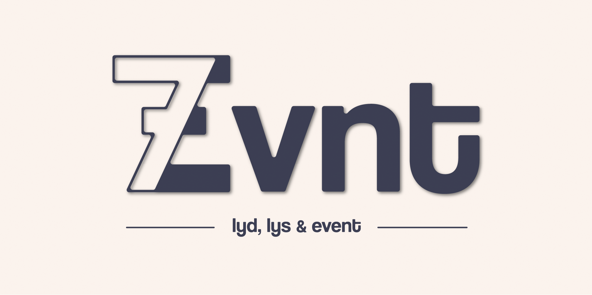

Jeg tror på prosesser som både er strukturerte og levende. Før jeg åpner Adobe eller setter kamera på stativ, tar jeg meg tid til å virkelig
forstå hva vi skal si – og hvorfor noen skal bry seg. Jeg blander kreativ utforsking med en god porsjon systematikk, og er ikke redd for å teste, justere
og teste igjen. Målet? Innhold som ikke bare ser bra ut, men som faktisk får folk til å stoppe opp og bli værende.
Strategisk kommunikasjon handler om mer enn bare gode ideer – det handler om å treffe riktig, med riktig budskap, til riktig tid.
Jeg legger stor vekt på grundig forarbeid: målgruppesegmentering for å forstå hvem vi snakker til, kanalanalyse for å velge de mest effektive plattformene,
og vurdering av format, tone og språk for å sikre gjennomslag. En bunnsolid strategi gir ikke bare retning, men også målbare resultater og er
fundamentet for alt jeg produserer.
Jeg er overbevist om at tydelig kommunikasjon slår alt, både internt og eksternt. Klarspråk, relevant innhold og et visuelt uttrykk som treffer målgruppen
er alltid førsteprioritet. Jeg liker å si at form uten funksjon er pynt, og pynt hører hjemme i gjærbakst, ikke i strategisk kommunikasjon. Hvert prosjekt
skal gjøre en jobb, og mitt mål er å sørge for at det gjør den bedre enn forventet.

Grafisk profil for en lyd, lys og event startup

Grafisk profil for en content creator

Videoer og filmer jeg har produsert

Russelogo design med video og genser design

Utvalg av SoMe-poster jeg har produsert

Ulike fotooppdrag jeg har gjennomført